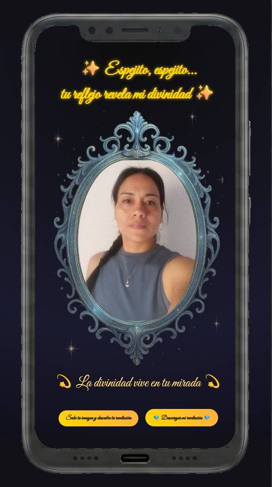

Una experiencia simbólica interactiva que revela mensajes visuales a través de geometría, color y conciencia.
Este portafolio nace desde el concepto del Espejo Mágico: cada proyecto refleja una dimensión distinta entre educación, arte y tecnología.
Explorar proyectosAplicación educativa para aprender tablas de multiplicar mediante juego interactivo y memoria visual.
Modelo visual de multiplicación basado en construcción geométrica y comprensión espacial.
Experiencia interactiva simbólica que genera revelaciones visuales personalizadas.
Proyecto creativo enfocado en bienestar consciente, estética natural y contenido espiritual.
Soy creadora de experiencias interactivas que combinan educación, arte simbólico y tecnología. Desarrollo aplicaciones, juegos educativos y proyectos visuales con enfoque en aprendizaje significativo y conciencia.
Mi trabajo conecta geometría, narrativa visual y diseño minimalista para construir experiencias digitales con identidad propia.
Disponible para colaboraciones y proyectos.
Email: contacto@tudominio.com
Web: almadejade.co
PithyPop: pithypop.com